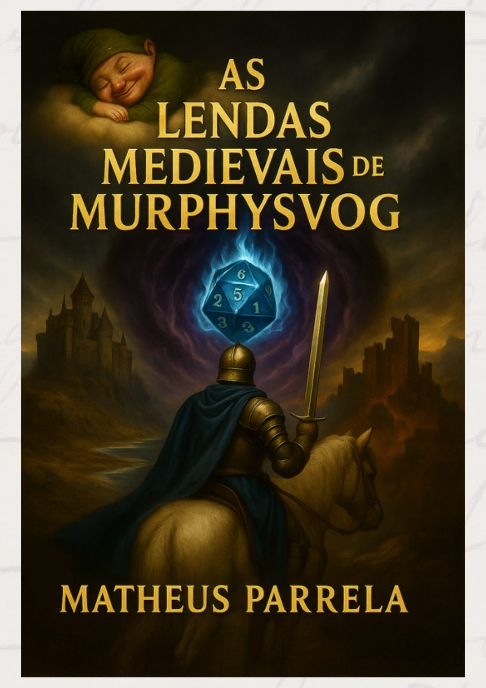
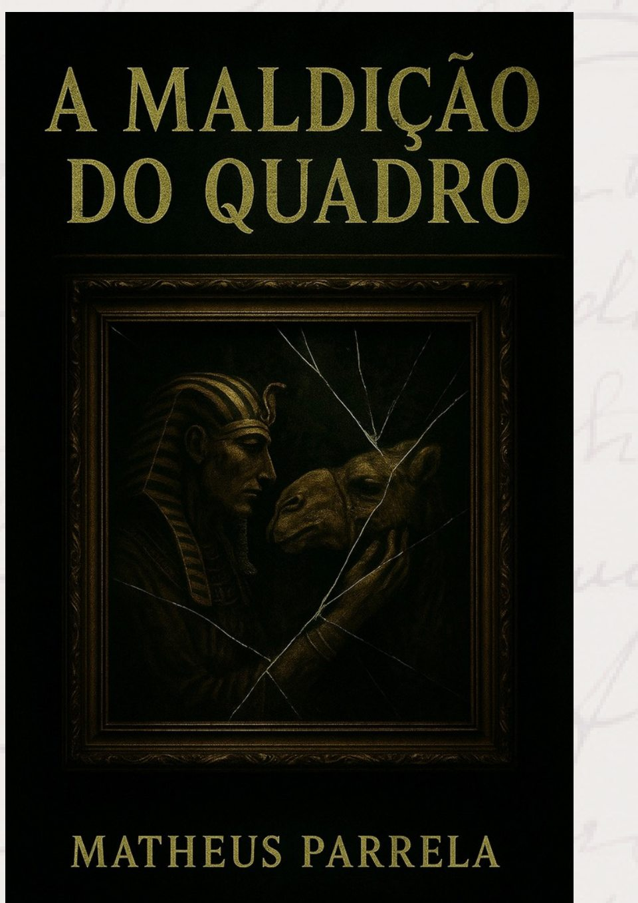
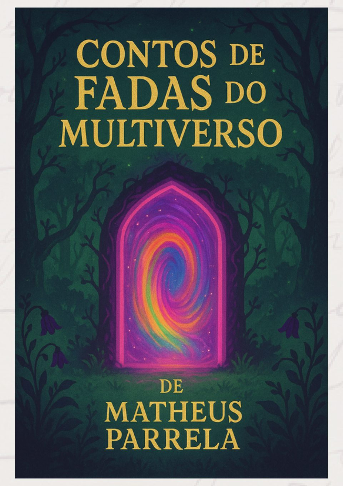
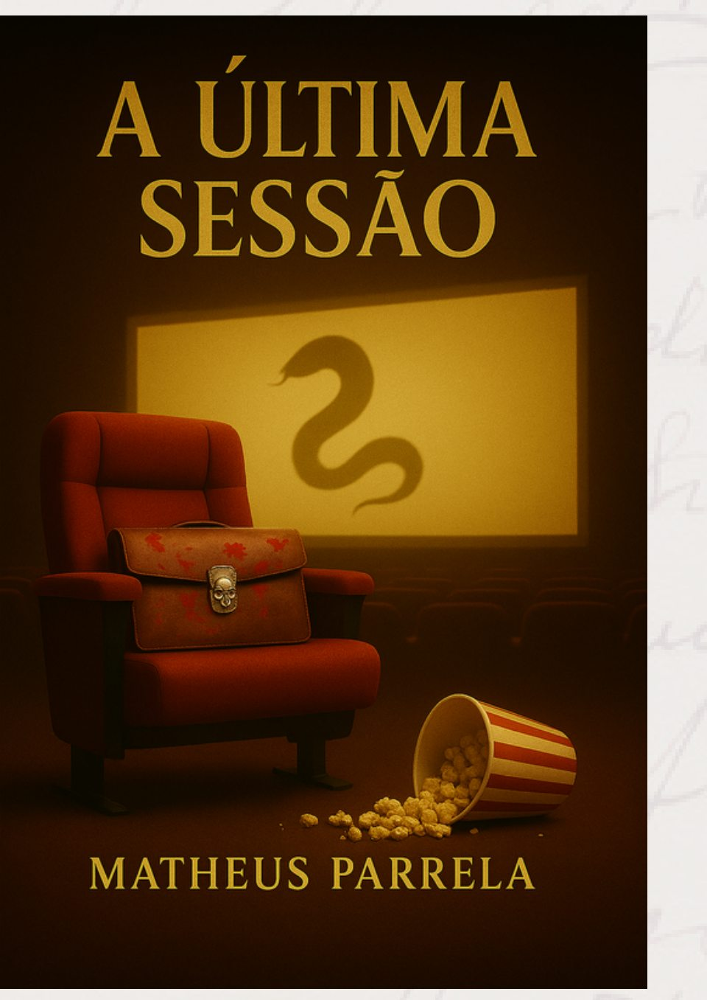

✧ UM UNIVERSO DE HISTÓRIAS A SEREM CONTADAS ✧
Toda história
é uma porta
para outro mundo.
Mistérios, memórias, mundos encantados e vidas extraordinárias. Entre no universo literário de Matheus Parrela.



ENTRE O REAL E O IMAGINÁRIO
Algumas histórias
não cabem em um só mundo.
O Parrelaverso nasce das lembranças da infância, das emoções intensas e dos pequenos acontecimentos da vida cotidiana — transformados em narrativas que atravessam o suspense, a fantasia, o romance e a aventura.
Um convite para se perder entre mundos, encontrar personagens inesquecíveis e descobrir que a imaginação não conhece fronteiras.

OBRA EM DESTAQUESUSPENSE · MISTÉRIO · SOBREVIVÊNCIA
Uma sessão
de matar.
Um grupo da alta sociedade é convidado a uma sessão de cinema secreta. O que parecia uma experiência exclusiva se transforma em um jogo mortal, onde cada escolha pode significar redenção ou condenação.
UM CATÁLOGO DE POSSIBILIDADES
Escolha sua próxima aventura.
Vinte portas. Vinte universos.
Qual deles vai abrir primeiro?
04 / POR TRÁS DAS PÁGINAS
As melhores histórias
começam com um sentimento.
“Minhas obras foram criadas em dedicação aos acontecimentos da minha vida que vieram à tona. Situações do cotidiano monótono, nas quais acabo explorando uma maneira criativa de lidar com a rotina.”
O PRÓXIMO CAPÍTULO ESTÁ POR VIR